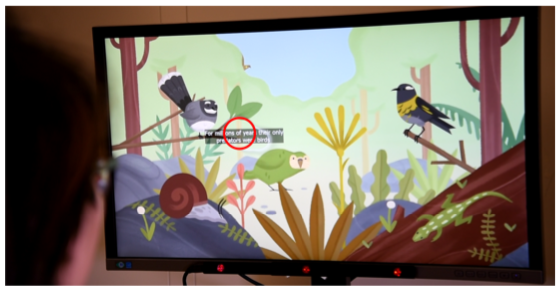

A View on the Viewer: Gaze-Adaptive Captions for Videos

Authors. Kuno Kurzhals, Fabian Göbel, Katrin Angerbauer, Michael Sedlmair, Martin Raubal
Venue. CHI (2020) Full Paper
Type. Full Paper
Abstract. Subtitles play a crucial role in cross-lingual distribution of multimedia content and help communicate information where auditory content is not feasible (loud environments, hearing impairments, unknown languages). Established methods utilize text at the bottom of the screen, which may distract from the video. Alternative techniques place captions closer to related content (e.g., faces) but are not applicable to arbitrary videos such as documentations. Hence, we propose to leverage live gaze as indirect input method to adapt captions to individual viewing behavior. We implemented two gaze-adaptive methods and compared them in a user study (n=54) to traditional captions and audio-only videos. The results show that viewers with less experience with captions prefer our gaze-adaptive methods as they assist them in reading. Furthermore, gaze distributions resulting from our methods are closer to natural viewing behavior compared to the traditional approach. Based on these results, we provide design implications for gaze-adaptive captions.